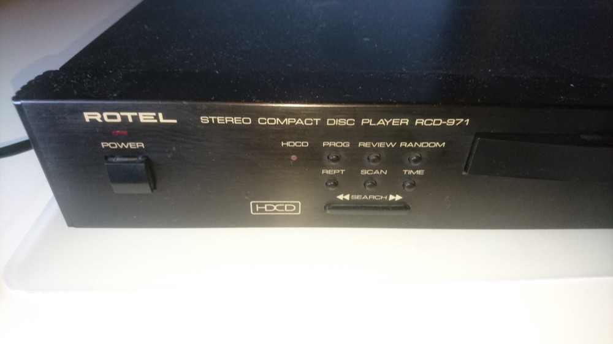

tgauweiler / CD Player repair
Introduction
The old ROTEL RCD-971 had the problem of not opening the disc tray anymore. Because i could still hear the motor spinning inside, i suspected the belt transmission between motor and disk tray.

Opening & Repair
Opening the case was straight forward.
- Remove the screws on the bottom and back of the case
- Remove the magnetic disk locking plate
- Eject the disk tray by spinning the black gear manually
- Remove the faceplate at the front
- Unscrew the cd player module from the case
- Gently unplug all cables to it
- Lift it up and pull it back gently out
- Remove the disk tray by ejecting it, remove the stopper at the end and push the two plastic lashes at each side to unlock it
- Remove the black cover over the gears by pushing the lash down and sliding the whole thing upwards
The square belt was still in place, but because age became to lose to unlock the magnet disk holder. The original replacement part is not available anymore and a comparable part from ebay would cost around 15€.. So i bought 86 different sized squared belts from ebay for 18€. Based on measurements i found a squared 40mm to fit best.
Assembled everything again and it works like new again.
Conclusion
Disassembling was extremely easy! Older hardware is so much easier to service. 15€ for one belt is downright ridiculous, but i guess now i have enough belts for the next years. Whole thing without getting a new belt took like 15 minutes.